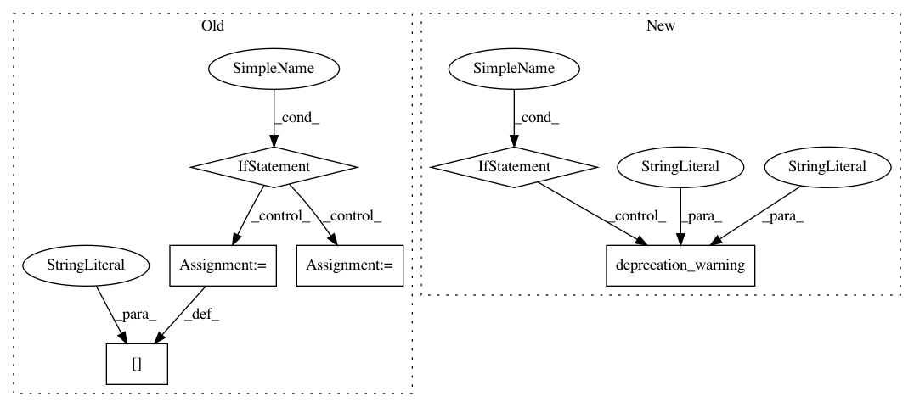

5537fe13b097097668f9c08a00051e8b7a2d1980,rllib/agents/dqn/dqn.py,,validate_config_and_setup_param_noise,#Any#,157
Before Change
config["rollout_fragment_length"] = adjusted_batch_size
// Setup parameter noise.
if config.get("parameter_noise", False):
if config["batch_mode"] != "complete_episodes":
raise ValueError("Exploration with parameter space noise requires "
"batch_mode to be complete_episodes.")
if config.get("noisy", False):
raise ValueError("Exploration with parameter space noise and "
"noisy network cannot be used at the same time.")
start_callback = config["callbacks"].get("on_episode_start")
def on_episode_start(info):
// as a callback function to sample and pose parameter space
// noise on the parameters of network
policies = info["policy"]
for pi in policies.values():
pi.add_parameter_noise()
if start_callback is not None:
start_callback(info)
config["callbacks"]["on_episode_start"] = on_episode_start
end_callback = config["callbacks"].get("on_episode_end")
def on_episode_end(info):
// as a callback function to monitor the distance
// between noisy policy and original policy
policies = info["policy"]
episode = info["episode"]
model = policies[DEFAULT_POLICY_ID].model
if hasattr(model, "pi_distance"):
episode.custom_metrics["policy_distance"] = model.pi_distance
if end_callback is not None:
end_callback(info)
config["callbacks"]["on_episode_end"] = on_episode_end
def get_initial_state(config):
return {
"last_target_update_ts": 0,
"num_target_updates": 0,
After Change
"type": "SoftQ",
"temperature": config.get("softmax_temp", 1.0)
}
if config.get("parameter_noise", DEPRECATED_VALUE) != DEPRECATED_VALUE:
deprecation_warning("parameter_noise", "exploration_config={"
"type=ParameterNoise"
"}")
if config["exploration_config"]["type"] == "ParameterNoise":
if config["batch_mode"] != "complete_episodes":
logger.warning(
"ParameterNoise Exploration requires `batch_mode` to be "
In pattern: SUPERPATTERN
Frequency: 3
Non-data size: 6
Instances
Project Name: ray-project/ray
Commit Name: 5537fe13b097097668f9c08a00051e8b7a2d1980
Time: 2020-04-03
Author: sven@anyscale.io
File Name: rllib/agents/dqn/dqn.py
Class Name:
Method Name: validate_config_and_setup_param_noise
Project Name: flow-project/flow
Commit Name: 07c33ef32f04297b940b306b1b587bdf1c1b0f6c
Time: 2018-03-14
Author: vinitsky.eugene@gmail.com
File Name: flow/core/params.py
Class Name: InFlows
Method Name: add
Project Name: flow-project/flow
Commit Name: 78eb0338b2d4484cf39812ae4cd2078b4fc57fa3
Time: 2018-03-13
Author: akreidieh@gmail.com
File Name: flow/core/params.py
Class Name: InFlows
Method Name: add